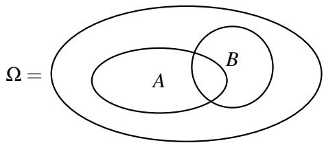
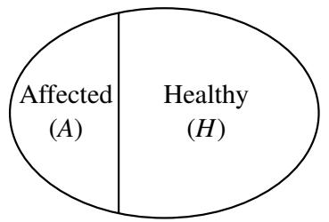
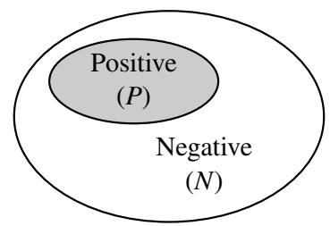
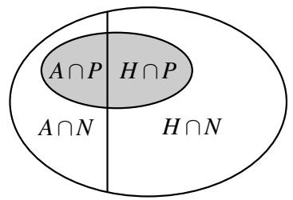
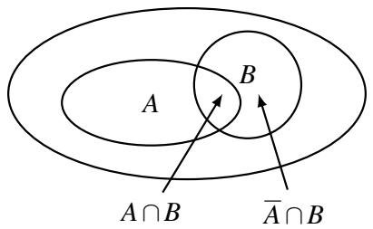
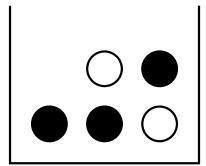
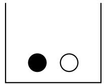
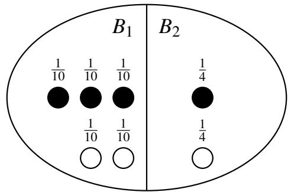

014 - 条件概率、独立性和事件组合
抛硬币的关键特性之一是独立性（Independence）：如果你抛一枚均匀的硬币十次并得到十个 \(T\) （反面），这并不会增加下一次抛硬币出现 \(H\) （正面）的可能性。它出现 \(H\) 的概率仍然正好是 \(50 \%\) 。
相比之下，假设在发牌时，前十张牌全是红色（红桃或方块）。下张牌是红色的概率是多少？我们开始时恰好有 26 张红牌和 26 张黑牌。但在发完前十张牌后，我们知道牌堆里还有 16 张红牌和 26 张黑牌。所以下一张牌是红色的概率是 \(\frac { 1 6 } { 4 2 }\) 。所以与抛硬币的情况不同，现在抽到红牌的概率不再独立于之前发出的牌。这就是我们要在本节讲义中探讨的现象。
1 条件概率
让我们考虑一个样本空间较小的例子。假设我们将 \(m = 4\) 个有标签的球扔进 \(n = 3\) 个有标签的箱子中；这是一个具有 \(3 ^ { 4 } = 8 1\) 个样本点的均匀样本空间。从上一节讲义中，我们已经知道第一个箱子为空的概率是 \(( 1 - \frac { 1 } { 3 } ) ^ { 4 } = ( \frac { 2 } { 3 } ) ^ { 4 } = \frac { 1 6 } { 8 1 }\) 。在已知第二个箱子为空的情况下，该事件发生的概率是多少？令 \(A\) 表示第一个箱子为空的事件， \(B\) 表示第二个箱子为空的事件。使用条件概率的语言，我们希望计算概率 \(\mathbb { P } [ A \mid B ]\) ，读作“在 \(B\) 给定的条件下 \(A\) 的条件概率”。
在 \(B\) 事件保证发生的情况下，我们应该如何计算 \(\mathbb { P } [ A \mid B ]\) 呢？由于事件 \(B\) 肯定会发生，我们不需要查看整个样本空间 \(\Omega\) ，而只需要查看仅由 \(B\) 中的样本点组成的较小样本空间。就下图而言，我们不再观察大椭圆，而只观察标有 \(B\) 的椭圆：

在事件 \(B\) 发生的情况下，每个样本点 \(\omega \in B\) 的概率应该是多少？如果它们都只是单纯地继承了 \(\Omega\) 中的概率，那么这些概率的总和将是 \(\sum _ { \omega \in B } \mathbb { P } [ \omega ] = \mathbb { P } [ B ]\) ，这通常小于 1。因此，为了得到正确的归一化，我们需要将每个样本点的概率按 \(\frac { 1 } { \mathbb { P } [ B ] }\) 的比例进行缩放。也就是说，对于每个样本点 \(\omega \in B\) ，新的概率变为
现在很清楚如何计算 \(\mathbb { P } [ A \mid B ]\) 了：即，我们只需将落在 \(A\) 和 \(B\) 中的所有样本点的缩放概率相加：
定义 14.1（条件概率）。对于同一概率空间中 \(\mathbb { P } [ B ] > 0\) 的事件 \(A , B \subseteq \Omega\) ，给定 \(B\) 时 \(A\) 的条件概率（Conditional probability）为
回到我们的球和箱子的例子，为了计算 \(\mathbb { P } [ A \mid B ]\) ，我们需要算出 \(\mathbb { P } [ A \cap B ]\) 。但是 \(A \cap B\) 是前两个箱子都为空的事件，即所有四个球都落在第三个箱子里。所以 \(\mathbb { P } [ A \cap B ] = \frac { 1 } { 8 1 }\) （为什么？）。因此，
不出所料， \(\mathbb { P } [ A \mid B ] = \frac { 1 } { 1 6 } = 0 . 0 6 2 5\) 远小于 \(\mathbb { P } [ A ] = \frac { 1 6 } { 8 1 } \approx 0 . 1 9 7 5\) ；已知箱子 2 为空后，箱子 1 也为空的可能性显着降低。
示例：发牌
让我们应用上述思想来计算：在发两张牌且已知第一张牌是 \(A\) 时，第二张牌也是 \(A\) 的概率。令 \(B\) 为第一张牌是 \(A\) 的事件，令 \(A\) 为第二张牌是 \(A\) 的事件。
为了计算 \(\mathbb { P } [ A \mid B ]\) ，我们需要算出 \(\mathbb { P } [ A \cap B ]\) 。这是两张牌都是 \(A\) 的概率。请注意，样本空间中有 \(52 \times 51\) 个样本点，因为每个样本点都是由两张牌组成的序列。如果两张牌都是 \(A\) ，则样本点在 \(A \cap B\) 中。这可以通过 \(4 \times 3 = 1 2\) 种方式发生。
由于每个样本点的概率相等， \(\mathbb { P } [ A \cap B ] = \frac { 1 2 } { 5 2 \times 5 1 }\) ，而第一次抽取得到 \(A\) 的概率 \(\mathbb { P } [ B ]\) 为 \(\frac { 4 } { 5 2 }\) 。因此，
这小于 \(\mathbb { P } [ A ] = \frac { 4 } { 5 2 } = \frac { 1 } { 1 3 }\) （见练习 1）。因此，如果第一张牌是 \(A\) ，那么第二张牌也是 \(A\) 的可能性就会降低。
2 贝叶斯推断
既然我们已经引入了条件概率的概念，我们可以看看它在现实世界中是如何使用的。条件概率是贝叶斯推断（Bayesian inference）的核心，该学科广泛应用于机器学习、通信和信号处理等领域。贝叶斯推断是一种在进行观察后更新知识的方法。例如，我们可能对给定事件 \(A\) 的概率有一个估计。在事件 \(B\) 发生后，我们可以将此估计更新为 \(\mathbb { P } [ A \mid B ]\) 。在这种解释中， \(\mathbb { P } [ A ]\) 可以被认为是先验概率（Prior probability）：即在进行观察之前，我们对感兴趣的事件 \(A\) 的似然性的评估。它反映了我们的先验知识。 \(\mathbb { P } [ A \mid B ]\) 可以被解释为观察之后的 \(A\) 的后验概率（Posterior probability）。它反映了我们更新后的知识。
这里有一个可以应用这种技术的例子。一家制药公司正在推销一种针对某种医疗疾病的新检测方法。根据临床试验，该检测具有以下特性：
- 当应用于感染者时，检测在 \(90 \%\) 的情况下结果呈阳性，在 \(10 \%\) 的情况下结果呈阴性（这些被称为“假阴性”）。
- 当应用于健康人时，检测在 \(80 \%\) 的情况下结果呈阴性，在 \(20 \%\) 的情况下结果呈阳性（这些被称为“假阳性”）。
假设该疾病在美国人口中的发病率为 \(5 \%\) ；这就是我们的先验知识。当一个随机的人接受检测且检测结果呈阳性时，我们如何更新该人患有该疾病的概率？（请注意，这大概与人口中随机一人患有该疾病的简单概率不同，后者仅为 \(\frac { 1 } { 2 } 0\) 。）这里隐含的概率空间是具有相等概率的全体美国人口。



此处的样本空间由美国的所有人组成——用 \(N\) 表示他们的人数（因此 \(N \approx 3 . 5\) 亿）。令 \(A\) 为随机选择的人受感染的事件， \(B\) 为随机选择的人检测呈阳性的事件。现在我们可以将上述信息改写为：
• \(\mathbb { P } [ A ] = 0 . 0 5\) （美国人口的 \(5 \%\) 受到感染） • \(\mathbb { P } [ B \mid A ] = 0 . 9\) （ \(90 \%\) 的受感染者检测呈阳性） • \(\mathbb { P } [ B \mid \bar { A } ] = 0 . 2\) （ \(20 \%\) 的健康人检测呈阳性）
我们要计算 \(\mathbb { P } [ A \mid B ]\) 。我们可以按照以下步骤进行：
我们通过应用条件概率的定义得到了上面的第二个等式：
为了评估 (1)，我们需要计算 \(\mathbb { P } [ B ]\) 。这是随机一个人检测呈阳性的概率。为了计算这个值，我们可以将两个值相加：健康人检测呈阳性的概率 \(\mathbb { P } [ \bar { A } \cap B ]\) 和受感染者检测呈阳性的概率 \(\mathbb { P } [ A \cap B ]\) 。我们可以求和是因为事件 \(\bar { A } \cap B\) 和 \(A \cap B\) 不相交：

再次应用条件概率的定义，我们有：
结合 (1) 和 (2)，我们已经根据 \(\mathbb { P } [ A ] , \mathbb { P } [ B \mid A ]\) 和 \(\mathbb { P } [ B \mid \bar { A } ]\) 表达了 \(\mathbb { P } [ A \mid B ]\) ：
代入上述数值，我们得到 \(\mathbb { P } [ A \mid B ] = \frac { 9 } { 4 7 } \approx 0 . 1 9\) 。
方程 (3) 对于许多推断问题都很有用。我们已知 \(\mathbb { P } [ A ]\) ，即感兴趣的事件 \(A\) 发生的（无条件）概率。我们已知 \(\mathbb { P } [ B \mid A ]\) 和 \(\mathbb { P } [ B \mid \bar { A } ]\) ，它们量化了观察结果的噪声程度。（例如，如果 \(\mathbb { P } [ B \mid A ] = 1\) 且 \(\mathbb { P } [ B \mid \bar { A } ] = 0\) ，则观察结果完全没有噪声。）现在我们要计算 \(\mathbb { P } [ A \mid B ]\) ，即已知观察结果的情况下，感兴趣的事件发生的概率。方程 (3) 允许我们做到这一点。
当然， (1) 到 (3) 是从概率的基本公理和条件概率的定义推导出来的，因此无论是否具有上述贝叶斯推断解释，它们都是正确的。然而，当我们应用概率论来研究推断问题时，这种解释非常有用。
3 贝叶斯法则和全概率公式
方程 (1) 和 (2) 本身非常有用。前者被称为贝叶斯法则（Bayes’ Rule），后者被称为全概率公式（Total Probability Rule）。当你想要计算 \(\mathbb { P } [ A \mid B ]\) 但已知的是 \(\mathbb { P } [ B \mid A ]\) 时，贝叶斯法则非常有用，即它允许我们“交换条件”。
全概率公式是“分情况讨论”策略的一种应用。有两种可能性：要么事件 \(A\) 发生，要么 \(A\) 不发生。如果 \(A\) 发生， \(B\) 发生的概率是 \(\mathbb { P } [ B \mid A ]\) 。如果 \(A\) 不发生， \(B\) 发生的概率是 \(\mathbb { P } [ B \mid \bar { A } ]\) 。如果我们知道或可以很容易地计算出这两个概率以及 \(\mathbb { P } [ A ]\) ，那么全概率公式就能得出事件 \(B\) 的概率。
3.1 示例
网球比赛
你即将与一位随机选择的对手进行一场网球比赛，你希望计算自己获胜的概率。你知你的对手将是两个人中的一个， \(X\) 或 \(Y\) 。如果选中了 \(X\) ，你获胜的概率为 0.7。如果选中了 \(Y\) ，你获胜的概率为 0.3。你的对手是通过抛一枚有偏硬币选出的，选中 \(X\) 的概率为 0.6。
首先让我们确定我们感兴趣的事件。令 \(A\) 为你获胜的事件。令 \(B _ { X }\) 为选中 \(X\) 的事件，令 \(B _ { Y }\) 为选中 \(Y\) 的事件。我们希望计算 \(\mathbb { P } [ A ]\) 。以下是我们目前已知的信息：
• \(\mathbb { P } [ A \mid B _ { X } ] = 0 . 7\) （如果选中 \(X\) ，你获胜的概率为 0.7） • \(\mathbb { P } [ A \mid B _ { Y } ] = 0 . 3\) （如果选中 \(Y\) ，你获胜的概率为 0.3） • \(\mathbb { P } [ B _ { X } ] = 0 . 6\) （选中 \(X\) 的概率为 0.6） • \(\mathbb { P } [ B _ { Y } ] = 0 . 4\) （选中 \(Y\) 的概率为 0.4）
通过使用全概率公式，我们有 \(\mathbb { P } [ A ] = \mathbb { P } [ A \mid B _ { X } ] \mathbb { P } [ B _ { X } ] + \mathbb { P } [ A \mid B _ { Y } ] \mathbb { P } [ B _ { Y } ]\) ，代入已知值得出 \(\mathbb { P } [ A ] = ( 0 . 7 \times 0 . 6 ) + ( 0 . 3 \times 0 . 4 ) = 0 . 5 4\) 。
球与箱子
想象我们有两个箱子，每个箱子都包含一定数量的黑球和白球：

箱子 1
箱子 2假设以相等的概率选择这两个箱子中的一个，并从选中的箱子中均匀随机地抽取一个球。在已知抽到白球的情况下，我们选中箱子 1 的概率是多少，即 \(\mathbb { P } [ \text{箱子 1} \mid \bigcirc ]\) ？
答案是 \(\frac { 2 } { 3 }\) 吗？因为我们知道总共有三个白球，其中两个在箱子 1 中。这种推理是不正确的。相反，我们应该如下图所示，适当地缩放每个样本点：

该图显示样本空间 \(\Omega\) 由事件 \(B _ { 1 }\) （对应于箱子 1）和事件 \(B _ { 2 }\) （对应于箱子 2）中的结果组成，即 \(\Omega = B _ { 1 } \cup B _ { 2 }\) 。我们可以使用条件概率的定义发现：
让我们尝试使用贝叶斯法则来得导出这个概率。为了应用贝叶斯法则，我们需要计算 \(\mathbb { P } [ \bigcirc \mid \text{箱子 1} ]\) 、 \(\mathbb { P } [ \text{箱子 1} ]\) 和 \(\mathbb { P } [ \bigcirc ]\) 。这里， \(\mathbb { P } [ \bigcirc \mid \text{箱子 1} ]\) 是在选中箱子 1 的情况下我们抽取到白球的概率，即 \(\frac { 2 } { 5 }\) 。根据问题的描述， \(\mathbb { P } [ \text{箱子 1} ] = \frac { 1 } { 2 }\) 。最后，可以使用全概率公式计算 \(\mathbb { P } [ \bigcirc ]\) ：
观察到我们可以在这里应用全概率公式，因为 \(\mathbb { P } [ \text{箱子 1} ]\) 是 \(\mathbb { P } [ \text{箱子 2} ]\) 的补集。最后，将上述值代入贝叶斯法则，我们得到在已知抽到白球的情况下，我们选中箱子 1 的概率：
我们上面所做的一切就是将贝叶斯法则和全概率公式结合起来；这也是我们如何得到 (3) 的。等价地，我们本可以将适当的值代入 (3)。
3.2 推广
我们现在在更一般的背景下考虑贝叶斯法则和全概率公式。首先，我们如下定义事件的分割。
定义 14.2（事件的分割）。如果满足以下条件，我们说事件 \(A\) 被分割为 \(n\) 个事件 \(A _ { 1 } , \ldots , A _ { n }\) ：
- \(A = A _ { 1 } \cup A _ { 2 } \cup \dots \cup A _ { n }\) ，且
- 对于所有 \(i \neq j\) ， \(A _ { i } \cap A _ { j } = \emptyset\) （即 \(A _ { 1 } , \ldots , A _ { n }\) 是互斥的）。
换句话说， \(A\) 中的每个结果都恰好属于事件 \(A _ { 1 } , \ldots , A _ { n }\) 中的一个。
现在，令 \(A _ { 1 } , \ldots , A _ { n }\) 为样本空间 \(\Omega\) 的一个分割。那么，任何事件 \(B\) 的全概率公式为
而假设 \(\mathbb { P } [ B ] \neq 0\) ，贝叶斯法则由下式给出
其中第二个等式由全概率公式得出。
4 事件的组合
在计算机科学的大多数概率应用中，我们感兴趣的是诸如 \(\bigcup _ { i = 1 } ^ { n } A _ { i }\) 和 \(\bigcap _ { i = 1 } ^ { n } A _ { i }\) 之类的事物，其中 \(A _ { i }\) 是简单事件（即，我们知道或可以很容易地计算出 \(\mathbb { P } [ A _ { i } ]\) ）。交集 \(\bigcap _ { i } A _ { i }\) 对应于事件 \(A _ { i }\) 的逻辑“与”（AND），而并集 \(\bigcup _ { i } A _ { i }\) 对应于它们的逻辑“或”（OR）。例如，如果 \(A _ { i }\) 表示某种系统中发生类型 \(i\) 故障的事件，则 \(\bigcup _ { i } A _ { i }\) 是系统发生故障的事件。
通常，计算此类组合的概率可能非常困难。在本节中，我们将讨论一些可以进行此类计算的情况。让我们从独立事件开始，独立事件的交集计算相当简单。
4.1 独立事件
定义 14.3（独立性）。如果 \(\mathbb { P } [ A \cap B ] = \mathbb { P } [ A ] \times \mathbb { P } [ B ]\) ，则称同一概率空间中的两个事件 \(A , B\) 是独立的（Independent）。
此定义背后的直觉如下。假设 \(\mathbb { P } [ B ] > 0\) 。那么我们有
因此，独立性具有自然的含义，即“ \(A\) 的概率不受 \(B\) 是否发生的影响”。（通过对称论证，如果 \(\mathbb { P } [ A ] > 0\) ，我们也有 \(\mathbb { P } [ B \mid A ] = \mathbb { P } [ B ]\) 。）对于满足 \(\mathbb { P } [ B ] > 0\) 的事件 \(A , B\) ，条件 \(\mathbb { P } [ A \mid B ] = \mathbb { P } [ A ]\) 实际上等价于独立性的定义。
我们之前提到的一些随机实验包含独立事件。例如，如果你抛两次硬币，第一次试验获得正面的事件独立于第二次试验获得正面的事件。掷两次骰子也是如此；每次试验的结果都是独立的。
上述定义可以推广到任何有限事件集：
定义 14.4（相互独立性）。如果对于大小为 \(| I | \ge 2\) 的每个子集 \(I \subseteq \{ 1 , \ldots , n \}\) ，满足以下条件，则称事件 \(A _ { 1 } , \ldots , A _ { n }\) 是相互独立的（Mutually independent）：
相互独立性的等价定义如下。
定义 14.5（相互独立性）。如果对于所有 \(B_i \in \{ A_i , \bar{A}_i \} , i = 1 , \ldots , n\) ，满足以下条件，则称事件 \(A _ { 1 } , \ldots , A _ { n }\) 是相互独立的（Mutually independent）：
备注
- 在定义 14.4 中，(6) 需要对 \(\{ 1 , \ldots , n \}\) 的每个大小为 \(| I | \ge 2\) 的子集 \(I\) 成立。由于 \(| I | = 0\) 和 \(| I | = 1\) 的情况不施加任何限制，因此省略。
- 注意，(6) 对概率分布施加了 \(2 ^ { n } - n - 1\) 个限制，而 (7) 定义了 \(2 ^ { n }\) 个限制。事实证明，由 (7) 隐含的正好 \(n + 1\) 个限制实际上是多余的。
对于相互独立的事件 \(A _ { 1 } , \ldots , A _ { n }\) ，根据条件概率的定义不难检查得出：对于任何 \(1 \le i \le n\) 以及任何子集 \(I \subseteq \{ 1 , \ldots , n \} \setminus \{ i \}\) ，我们有
请注意，每对事件的独立性（即所谓的两两独立，Pairwise independence）并不一定意味着相互独立。如下例所示，我们可以构造三个事件 \(A , B , C\) ，使得每对事件都是独立的，但三元组 \(A , B , C\) 不是相互独立的。
示例：两两独立但不相互独立的事件
假设你抛一枚公平的硬币两次，令 \(A\) 为第一次抛掷为 \(H\) 的事件， \(B\) 为第二次抛掷为 \(H\) 的事件。现在令 \(C\) 为两次抛掷结果相同的事件（即两次都是 \(H\) 或两次都是 \(T\) ）。当然 \(A\) 和 \(B\) 是独立的。更有趣的是， \(A\) 和 \(C\) 也是独立的：已知第一次抛掷出现 \(H\) ，第二次抛掷与第一次相同的机会仍然是 \(\frac { 1 } { 2 }\) 。另一种说法是 \(\mathbb { P } [ A \cap C ] = \frac { 1 } { 4 } = \mathbb { P } [ A ] \mathbb { P } [ C ]\) ，因为 \(A \cap C\) 是第一次抛掷为 \(H\) 且第二次抛掷也为 \(H\) 的事件。按照同样的推理， \(B\) 和 \(C\) 也是独立的。另一方面， \(A, B\) 和 \(C\) 不是相互独立的。例如，如果我们已知 \(A\) 和 \(B\) 发生，那么 \(C\) 发生的概率为 1。所以，尽管 \(A, B\) 和 \(C\) 不是相互独立的，但它们中的每一对都是独立的。换句话说， \(A, B\) 和 \(C\) 是两两独立但不是相互独立的。
4.2 事件的交集
计算互位独立的事件交集的概率很容易；这直接遵循定义。我们只需将每个事件的概率相乘即可。对于非相互独立的事件，我们如何计算交集的概率？根据条件概率的定义，我们立即可以得到以下用于计算事件交集概率的乘法法则（Product Rule，有时也称为链式法则）。
定理 14.1（乘法法则）。对于任何事件 \(A , B\) ，我们有
更一般地，对于任何事件 \(A _ { 1 } , \ldots , A _ { n }\) ，
证明。第一个断言直接遵循 \(\mathbb { P } [ B \mid A ]\) 的定义（事实上是 \(n = 2\) 时第二个断言的特例）。
为了证明第二个断言，我们将对 \(n\) （事件的数量）使用归纳法。基准情况是 \(n = 1\) ，对应于 \(\mathbb { P } [ A ] = \mathbb { P } [ A ]\) 的陈述，这显然成立。对于任意 \(n > 1\) ，假设（归纳假设）：
现在我们可以将条件概率的定义应用于两个事件 \(A _ { n }\) 和 \(\bigcap _ { i = 1 } ^ { n - 1 } A _ { i }\) ，从而推导出：
其中在最后一行我们使用了归纳假设。这完成了归纳证明。 \(\square\)
当我们可以将样本空间视为一系列选择时，乘法法则特别有用。接下来的几个例子说明了这一点。
示例：抛硬币
抛一枚公平的硬币三次。令 \(A\) 为三次抛掷结果均为正面的事件。则 \(A = A _ { 1 } \cap A _ { 2 } \cap A _ { 3 }\) ，其中 \(A _ { i }\) 是第 \(i\) 次抛掷为正面的事件。我们有：
这里的第二行遵循抛掷是相互独立的事实。当然，从我们在上一节讲义中对概率空间的定义可以看出， \(\mathbb { P } [ A ] = \frac { 1 } { 8 }\) 。审视此计算的另一种方式是，它证明了我们对概率空间的定义是合理的，并表明它与假设抛硬币是相互独立的一致。
如果硬币是有偏的，正面概率为 \(p\) ，我们再次利用独立性得到：
更一般地，任何包含 \(k\) 个正面和 \(n - k\) 个反面的 \(n\) 次抛掷序列的概率是 \(p ^ { k } ( 1 - p ) ^ { n - k }\) 。这实际上就是我们这样定义概率空间的原因：我们定义样本点的概率，以便抛硬币表现得相互独立。
示例：重温蒙提霍尔问题
回想一下蒙提霍尔问题：有三个门，奖品在任何给定门后的概率是 \(\frac { 1 } { 3 }\) 。另外两扇门后面是山羊。选手随机选择一扇门，主持人打开另外两扇门中的一扇，露出山羊。在这种背景下，我们如何计算交集？例如，选手选择 1 号门、奖品在 2 号门后、且主持人选择 3 号门的概率是多少？
令 \(C _ { i }\) 为选手选择 \(i\) 号门的事件， \(P _ { i }\) 为奖品在 \(i\) 号门后的事件， \(H _ { i }\) 为主持人选择 \(i\) 号门的事件。那么，根据乘法法则：
\(C _ { 1 }\) 的概率是 \(\frac { 1 } { 3 }\) ，因为选手是随机选择门的。给定 \(C _ { 1 }\) ， \(P _ { 2 }\) 的概率仍然是 \(\frac { 1 } { 3 }\) ，因为它们是独立的。给定事件 \(C _ { 1 }\) 和 \(P _ { 2 }\) ，主持人选择 3 号门的概率是 1；主持人不能选择 1 号门，因为选手已经选了它，主持人也不能选择 2 号门，因为主持人必须揭示山羊（而不是奖品）。因此：
观察到在这种背景下我们需要条件概率；如果我们只是简单地将每个事件的概率相乘，我们将得到 \(\frac { 1 } { 2 7 }\) ，因为 \(H _ { 3 }\) 的概率也是 \(\frac { 1 } { 3 }\) （你能明白为什么吗？）。如果我们改变情况，转而询问选手选择 1 号门、奖品在 1 号门后、且主持人选择 3 号门的概率是多少？我们可以使用与上面相同的技术，但我们的最终答案将不同。这作为一个练习（见练习 4）。
现在，注意到 \(\mathbb { P } [ H _ { 3 } \mid C _ { 1 } ] = \frac { 1 } { 2 }\) （见练习 5）且 \(\mathbb { P } [ C _ { 1 } \cap H _ { 3 } ] = \mathbb { P } [ C _ { 1 } ] \mathbb { P } [ H _ { 3 } \mid C _ { 1 } ] = \frac { 1 } { 3 } \times \frac { 1 } { 2 } = \frac { 1 } { 6 }\) ，我们得到：
这是我们在上一节讲义中描述的相同结论的更正式推导。
示例：扑克牌
让我们使用乘法法则以不同的方式计算同花（Flush）的概率。这等于 \(4 \times \mathbb { P } [ A ]\) ，其中 \(A\) 是红桃同花的概率。直观上，这应该很清楚，因为有 4 种花色；我们将在下一节中看到为什么这在形式上是正确的。我们可以写成 \(A = \bigcap _ { i = 1 } ^ { 5 } A _ { i }\) ，其中 \(A _ { i }\) 是我们挑选的第 \(i\) 张牌是红桃的事件。所以 we have：
显然 \(\mathbb { P } [ A _ { 1 } ] = \frac { 1 3 } { 5 2 } = \frac { 1 } { 4 }\) 。那 \(\mathbb { P } [ A _ { 2 } \mid A _ { 1 } ]\) 呢？嗯，由于我们以 \(A _ { 1 }\) 为条件（第一张牌是红桃），第二张牌仅剩 51 种可能性，其中 12 个是红桃。所以 \(\mathbb { P } [ A _ { 2 } \mid A _ { 1 } ] = \frac { 1 2 } { 5 1 }\) 。类似地， \(\mathbb { P } [ A _ { 3 } \mid A _ { 1 } \cap A _ { 2 } ] = \frac { 1 1 } { 5 0 }\) ，依此类推。所以我们得到：
这正是我们在上一节讲义中计算出的分数。
所以现在我们在许多概率空间中都有两种计算概率的方法。将这些不同的方法保留下来非常有用，既可以检查你的答案，也因为在某些情况下，其中一种方法比另一种更容易使用。
4.3 事件的并集
你正在拉斯维加斯，你发现了一个具有以下规则的新游戏。你选择一个 1 到 6 之间的数字。然后掷三个骰子。当且仅当你的数字出现在至少一个骰子上时，你就赢了。
赌场声称你获胜的机会是 \(50 \%\) ，理由如下。令 \(A\) 为你获胜的事件。我们可以写成 \(A = A _ { 1 } \cup A _ { 2 } \cup A _ { 3 }\) ，其中 \(A _ { i }\) 是你的数字出现在骰子 \(i\) 上的事件。显然对于每个 \(i\) ， \(\mathbb { P } [ A _ { i } ] = \frac { 1 } { 6 }\) 。因此，他们声称：
这个计算正确吗？嗯，假设赌场投掷了六个骰子，只要你的数字出现至少一次你就赢了。那么类似的计算会说你获胜的概率为 \(6 \times \frac { 1 } { 6 } = 1\) ，也就是说，肯定会赢！当骰子的数量多于 6 个时，情况变得更加荒谬。
问题在于事件 \(A _ { i }\) 不是互斥的：即，存在一些属于多个 \(A _ { i }\) 的样本点。（我们可能非常幸运，我们的数字可能出现在两个甚至所有三个骰子上。）所以，如果我们直接将 \(\mathbb { P } [ A _ { i } ]\) 相加，我们就在不止一次地计算某些样本点。
幸运的是，在讲义 12 中我们学习了容斥原理（Principle of Inclusion-Exclusion），它允许我们处理这种情况。在定理 12.3 的证明中，结果表明每个 \(\omega \not \in A _ { 1 } \cup \dots \cup A _ { n }\) 都不被容斥公式计算，而每个 \(\omega \in A _ { 1 } \cup \dots \cup A _ { n }\) 都被该公式恰好计算一次。因此，我们不是在容斥公式中对 \(\bigcap _ { i \in S } A _ { i }\) 的基数进行求和（带有适当的符号），而是对它们的概率 \(\mathbb { P } [ \bigcap _ { i \in S } A _ { i } ]\) 进行求和，从而得到以下用于计算 \(\mathbb { P } [ A _ { 1 } \cup \dots \cup A _ { n } ]\) 的有用公式：
定理 14.2（容斥原理）。令 \(A _ { 1 } , \ldots , A _ { n }\) 为某个概率空间中的事件，其中 \(n \ge 2\) 。那么，我们有：
(8) 的右侧可以写成：
其中 \(\textstyle \sum _ { i < j }\) 表示对所有满足 \(i < j\) 的 \(i , j \in \{ 1 , \ldots , n \}\) 求和，以此类推。也就是说，为了计算 \(\mathbb { P } [ \cup _ { i } A _ { i } ]\) ，我们首先将事件概率 \(\mathbb { P } [ A _ { i } ]\) 相加，然后减去所有两两交集的概率，然后加回所有三向交集的概率，依此类推。你可能想通过绘制维恩图来验证 \(n = 3\) 的特殊情况。你可能还想通过归纳法证明一般 \(n\) 的公式（其方式类似于上述乘法法则的证明）。
使用 (8)，在拉斯维加斯的新游戏中获得幸运的概率由下式给出：
现在这里的好消息是事件 \(A _ { i }\) 是相互独立的（任何骰子的结果不取决于其他骰子的结果），所以 \(\mathbb { P } [ A _ { i } \cap A _ { j } ] = \mathbb { P } [ A _ { i } ] \mathbb { P } [ A _ { j } ] = ( \frac { 1 } { 6 } ) ^ { 2 } = \frac { 1 } { 3 6 }\) ，同样 \(\mathbb { P } [ A _ { 1 } \cap A _ { 2 } \cap A _ { 3 } ] = ( \frac { 1 } { 6 } ) ^ { 3 } = \frac { 1 } { 2 1 6 }\) 。所以，我们得到：
所以你的胜率比赌场声称的要差得多！
当 \(n\) 很大时（即我们对许多事件的并集感兴趣），容斥公式基本上是无用的，因为它涉及计算每一个非空子集事件交集的概率：而这些共有 \(2 ^ { n } - 1\) 个！有时我们可以仅查看它的前几项而忽略其余部分：注意，当 \(k\) 为奇数时，求前 \(k\) 项的和会给我们一个高估，而当 \(k\) 为偶数时则低估，且这两种估计都会随着 \(k\) 的增加而变得更好。
然而，在许多情况下，我们可以通过仅查看第一项来获得很大的进展：
- （互斥事件） 如果事件 \(A _ { 1 } , \ldots , A _ { n }\) 是互斥的（即对于所有 \(i \neq j\) ， \(A _ { i } \cap A _ { j } = \emptyset\) ），则：
[请注意，我们在示例中已经多次使用了这一事实，例如在声称同花的概率是红桃同花概率的四倍时——显然不同花色的同花是互斥事件。]
- （并集上界） 令 \(A _ { 1 } , \ldots , A _ { n }\) 为某个概率空间中的事件。那么，对于所有 \(n \in \mathbb { Z } ^ { + }\) ：
这仅仅是说将 \(\mathbb { P } [ A _ { i } ]\) 相加只能高估并集的概率。尽管看起来很粗略，但我们稍后将看到如何在计算机科学示例中有效地使用并集上界（Union Bound）。
5 练习
- 假设从标准扑克牌中发出五张牌。令 \(A _ { i }\) 为第 \(i\) 张牌是 \(A\) 的事件。证明对于所有 \(i = 1 , \ldots , 5\) ， \(\mathbb { P } [ A _ { i } ] = \frac { 1 } { 1 3 }\) 。
- 证明方程 (4) 和 (5)。
- 证明相互独立性的定义 14.4 和 14.5 是等效的。
- 在蒙提霍尔问题中，找出 \(\mathbb { P } [ C _ { 1 } \cap P _ { 1 } \cap H _ { 3 } ]\) 。
- 在蒙提霍尔问题中，证明 \(\mathbb { P } [ H _ { 3 } \mid C _ { 1 } ] = \frac { 1 } { 2 }\) 。
- 证明 (9) 中的并集上界。